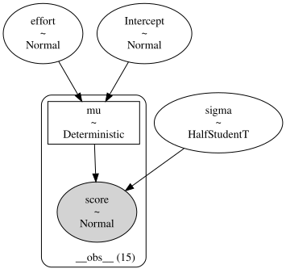
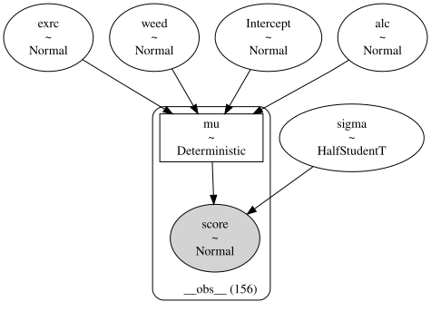
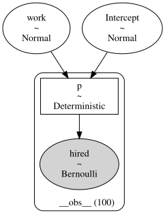
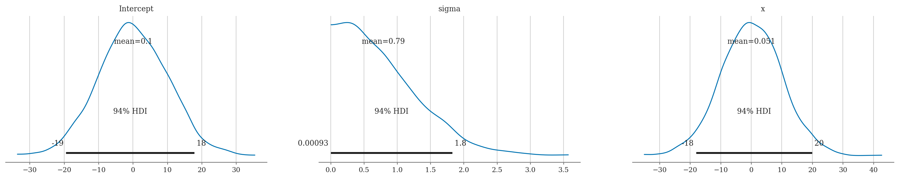
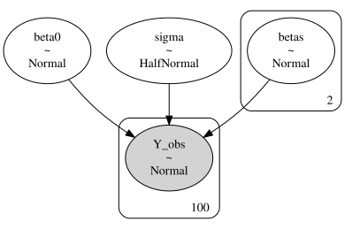

Section 5.3 — Bayesian linear models#
This notebook contains the code examples from Section 5.3 Bayesian linear models from the No Bullshit Guide to Statistics.
See also examples in:
Bambi demos: 01_multiple_linear_regression.ipynb and 02_logistic_regression.ipynb
Notebook setup#
# load Python modules
import os
import numpy as np
import pandas as pd
import seaborn as sns
import matplotlib.pyplot as plt
# Figures setup
plt.clf() # needed otherwise `sns.set_theme` doesn"t work
from plot_helpers import RCPARAMS
# RCPARAMS.update({"figure.figsize": (9, 5)}) # good for screen
RCPARAMS.update({"figure.figsize": (6, 3)}) # good for print
sns.set_theme(
context="paper",
style="whitegrid",
palette="colorblind",
rc=RCPARAMS,
)
# High-resolution please
%config InlineBackend.figure_format = "retina"
# Where to store figures
from ministats.utils import savefigure
DESTDIR = "figures/bayes/linear"
#######################################################
WARNING (pytensor.tensor.blas): Using NumPy C-API based implementation for BLAS functions.
<Figure size 640x480 with 0 Axes>
# set random seed for repeatability
np.random.seed(42)
# silence statsmodels kurtosistest warning when using n < 20
import warnings
warnings.filterwarnings("ignore", category=UserWarning)
Bayesian model#
TODO: formula
TODO: graphical model diagram
Example 1: students score as a function of effort#
Students dataset#
students = pd.read_csv("../datasets/students.csv")
students.shape
(15, 5)
students.head(3)
| student_ID | background | curriculum | effort | score | |
|---|---|---|---|---|---|
| 0 | 1 | arts | debate | 10.96 | 75.0 |
| 1 | 2 | science | lecture | 8.69 | 75.0 |
| 2 | 3 | arts | debate | 8.60 | 67.0 |
students[["effort","score"]].describe().T
| count | mean | std | min | 25% | 50% | 75% | max | |
|---|---|---|---|---|---|---|---|---|
| effort | 15.0 | 8.904667 | 1.948156 | 5.21 | 7.76 | 8.69 | 10.35 | 12.0 |
| score | 15.0 | 72.580000 | 9.979279 | 57.00 | 68.00 | 72.70 | 75.75 | 96.2 |
sns.scatterplot(x="effort", y="score", data=students);
# # FIGURES ONLY
# filename = os.path.join(DESTDIR, "example1_posterior.pdf")
# savefigure(plt.gcf(), filename)
{kind=link}
Bayesian model#
TODO: add formulas
Bambi model#
import bambi as bmb
priors1 = {
"Intercept": bmb.Prior("Normal", mu=70, sigma=20), # use when center_predictors=True
# "Intercept": bmb.Prior("Normal", mu=30.11, sigma=20), # use when center_predictors=False ?
"effort": bmb.Prior("Normal", mu=0, sigma=10),
"sigma": bmb.Prior("HalfStudentT", nu=4, sigma=10),
}
mod1 = bmb.Model("score ~ 1 + effort",
family="gaussian",
link="identity",
priors=priors1,
# center_predictors=False, # default center_predictors is True
data=students)
mod1
Formula: score ~ 1 + effort
Family: gaussian
Link: mu = identity
Observations: 15
Priors:
target = mu
Common-level effects
Intercept ~ Normal(mu: 70.0, sigma: 20.0)
effort ~ Normal(mu: 0.0, sigma: 10.0)
Auxiliary parameters
sigma ~ HalfStudentT(nu: 4.0, sigma: 10.0)
mod1.build()
mod1.graph()
# # FIGURES ONLY
# filename = os.path.join(DESTDIR, "example1_students_mod1_graph")
# mod1.graph(name=filename, fmt="png", dpi=300)

Model fitting and analysis#
idata1 = mod1.fit(random_seed=[42,42,44,45])
Initializing NUTS using jitter+adapt_diag...
Multiprocess sampling (2 chains in 2 jobs)
NUTS: [sigma, Intercept, effort]
Sampling 2 chains for 1_000 tune and 1_000 draw iterations (2_000 + 2_000 draws total) took 2 seconds.
We recommend running at least 4 chains for robust computation of convergence diagnostics
import arviz as az
az.summary(idata1, kind="stats")
| mean | sd | hdi_3% | hdi_97% | |
|---|---|---|---|---|
| sigma | 5.377 | 1.144 | 3.358 | 7.406 |
| Intercept | 32.617 | 6.827 | 19.968 | 46.023 |
| effort | 4.483 | 0.753 | 2.997 | 5.871 |
az.plot_posterior(idata1);
{kind=link}
# # FIGURES ONLY
# az.plot_posterior(idata1, round_to=2, figsize=(7,2));
# filename = os.path.join(DESTDIR, "example1_students_posterior.pdf")
# savefigure(plt.gcf(), filename)
# az.plot_ppc(idata1_rep, group="posterior")
import xarray as xr
# Generate samples form the posterior predictive distribution
idata1_rep = mod1.predict(idata1, inplace=False, kind="response")
# Calculate the model mean
post1 = idata1_rep["posterior"]
efforts = students["effort"]
post1["score_model"] = post1["Intercept"] + post1["effort"] * xr.DataArray(efforts)
# Plot
# az.plot_lm(y="score", idata=idata1, x=efforts);
# az.plot_lm(y="score", idata=idata1, y_model="score_pred", x=efforts);
az.plot_lm(y="score", idata=idata1_rep, y_model="score_model",
x=efforts, kind_pp="hdi", kind_model="hdi");
# # FIGURES ONLY
# filename = os.path.join(DESTDIR, "example1_plot_predictions.pdf")
# savefigure(plt.gcf(), filename)
{kind=link}
Compare to previous results#
# compare with statsmodels results
import statsmodels.formula.api as smf
lm1 = smf.ols("score ~ 1 + effort", data=students).fit()
lm1.summary().tables[1]
| coef | std err | t | P>|t| | [0.025 | 0.975] | |
|---|---|---|---|---|---|---|
| Intercept | 32.4658 | 6.155 | 5.275 | 0.000 | 19.169 | 45.763 |
| effort | 4.5049 | 0.676 | 6.661 | 0.000 | 3.044 | 5.966 |
np.sqrt(lm1.scale)
4.929598282660258
Conclusions#
We see effort tends to increase student scores. The results we obtain from the Bayesian analysis are largely consistent with the frequentist results from Section 4.1, however Bayesian models allow for simpler interpretation.
Example 2: doctors sleep scores#
Doctors dataset#
doctors = pd.read_csv("../datasets/doctors.csv")
doctors.shape
(156, 9)
doctors.head(3)
| permit | loc | work | hours | caf | alc | weed | exrc | score | |
|---|---|---|---|---|---|---|---|---|---|
| 0 | 93273 | rur | hos | 21 | 2 | 0 | 5.0 | 0.0 | 63 |
| 1 | 90852 | urb | cli | 74 | 26 | 20 | 0.0 | 4.5 | 16 |
| 2 | 92744 | urb | hos | 63 | 25 | 1 | 0.0 | 7.0 | 58 |
doctors[["alc","weed","exrc","score"]].describe().T
| count | mean | std | min | 25% | 50% | 75% | max | |
|---|---|---|---|---|---|---|---|---|
| alc | 156.0 | 11.839744 | 9.428506 | 0.0 | 3.750 | 11.0 | 19.0 | 44.0 |
| weed | 156.0 | 0.628205 | 1.391068 | 0.0 | 0.000 | 0.0 | 0.5 | 10.5 |
| exrc | 156.0 | 5.387821 | 4.796361 | 0.0 | 0.875 | 4.5 | 8.0 | 19.0 |
| score | 156.0 | 48.025641 | 20.446294 | 4.0 | 33.000 | 49.5 | 62.0 | 97.0 |
Bayesian model#
TODO: add formulas
Bambi model#
#######################################################
priors2 = {
"Intercept": bmb.Prior("Normal", mu=50, sigma=40),
# we'll set the priors for the slopes below
"sigma": bmb.Prior("HalfStudentT", nu=4, sigma=20),
}
mod2 = bmb.Model("score ~ 1 + alc + weed + exrc",
family="gaussian",
link="identity",
priors=priors2,
# center_predictors=False,
data=doctors)
# set the same prior for all slopes using `set_priors`
slope_prior = bmb.Prior("Normal", mu=0, sigma=10)
mod2.set_priors(common=slope_prior)
mod2
Formula: score ~ 1 + alc + weed + exrc
Family: gaussian
Link: mu = identity
Observations: 156
Priors:
target = mu
Common-level effects
Intercept ~ Normal(mu: 50.0, sigma: 40.0)
alc ~ Normal(mu: 0.0, sigma: 10.0)
weed ~ Normal(mu: 0.0, sigma: 10.0)
exrc ~ Normal(mu: 0.0, sigma: 10.0)
Auxiliary parameters
sigma ~ HalfStudentT(nu: 4.0, sigma: 20.0)
mod2.build()
mod2.graph()
# # FIGURES ONLY
# filename = os.path.join(DESTDIR, "example2_doctors_mod2_graph")
# mod2.graph(name=filename, fmt="png", dpi=300)

Model fitting and analysis#
idata2 = mod2.fit(random_seed=[42,43,44,45])
Initializing NUTS using jitter+adapt_diag...
Multiprocess sampling (2 chains in 2 jobs)
NUTS: [sigma, Intercept, alc, weed, exrc]
Sampling 2 chains for 1_000 tune and 1_000 draw iterations (2_000 + 2_000 draws total) took 2 seconds.
We recommend running at least 4 chains for robust computation of convergence diagnostics
az.summary(idata2, kind="stats", hdi_prob=0.95)
| mean | sd | hdi_2.5% | hdi_97.5% | |
|---|---|---|---|---|
| sigma | 8.266 | 0.465 | 7.369 | 9.169 |
| Intercept | 60.427 | 1.254 | 57.913 | 62.785 |
| alc | -1.801 | 0.071 | -1.940 | -1.670 |
| weed | -1.023 | 0.476 | -1.899 | -0.073 |
| exrc | 1.773 | 0.140 | 1.493 | 2.045 |
az.plot_posterior(idata2, var_names=["alc", "weed", "exrc"], ref_val=0);
{kind=link}
# # FIGURES ONLY
# ref_vals = {"alc":[{"ref_val":0}],
# "weed":[{"ref_val":0}],
# "exrc":[{"ref_val":0}]}
# az.plot_posterior(idata2, round_to=2, ref_val=ref_vals, figsize=(7,3));
# filename = os.path.join(DESTDIR, "example2_posterior.pdf")
# savefigure(plt.gcf(), filename)
Partial correlation scale?#
Compare to previous results#
# compare with statsmodels results
import statsmodels.formula.api as smf
formula = "score ~ 1 + alc + weed + exrc"
lm2 = smf.ols(formula, data=doctors).fit()
lm2.summary().tables[1]
| coef | std err | t | P>|t| | [0.025 | 0.975] | |
|---|---|---|---|---|---|---|
| Intercept | 60.4529 | 1.289 | 46.885 | 0.000 | 57.905 | 63.000 |
| alc | -1.8001 | 0.070 | -25.726 | 0.000 | -1.938 | -1.662 |
| weed | -1.0216 | 0.476 | -2.145 | 0.034 | -1.962 | -0.081 |
| exrc | 1.7683 | 0.138 | 12.809 | 0.000 | 1.496 | 2.041 |
np.sqrt(lm2.scale)
8.202768119825624
Conclusions#
Example 3: Bayesian logistic regression#
Interns data#
interns = pd.read_csv("../datasets/interns.csv")
interns.head(3)
| work | hired | |
|---|---|---|
| 0 | 42.5 | 1 |
| 1 | 39.3 | 0 |
| 2 | 43.2 | 1 |
Bayesian logistic regression model#
Bambi model#
priors3 = {
"Intercept": bmb.Prior("Normal", mu=0, sigma=20), # when center_predictors=True
# "Intercept": bmb.Prior("Normal", mu=-78.65, sigma=25.63), # when center_predictors=False
"work": bmb.Prior("Normal", mu=0, sigma=1.5),
}
mod3 = bmb.Model("hired ~ 1 + work",
family="bernoulli",
link="logit",
priors=priors3,
# center_predictors=False, # default center_predictors is True
data=interns)
mod3
Formula: hired ~ 1 + work
Family: bernoulli
Link: p = logit
Observations: 100
Priors:
target = p
Common-level effects
Intercept ~ Normal(mu: 0.0, sigma: 20.0)
work ~ Normal(mu: 0.0, sigma: 1.5)
mod3.build()
mod3.graph()
# # FIGURES ONLY
# filename = os.path.join(DESTDIR, "example3_interns_mod3_graph")
# mod3.graph(name=filename, fmt="png", dpi=300)

Model fitting and analysis#
idata3 = mod3.fit(random_seed=[42,43,44,45])
Modeling the probability that hired==1
Initializing NUTS using jitter+adapt_diag...
Multiprocess sampling (2 chains in 2 jobs)
NUTS: [Intercept, work]
Sampling 2 chains for 1_000 tune and 1_000 draw iterations (2_000 + 2_000 draws total) took 1 seconds.
There were 1 divergences after tuning. Increase `target_accept` or reparameterize.
We recommend running at least 4 chains for robust computation of convergence diagnostics
az.summary(idata3, kind="stats")
| mean | sd | hdi_3% | hdi_97% | |
|---|---|---|---|---|
| Intercept | -79.499 | 18.579 | -114.281 | -48.080 |
| work | 2.002 | 0.469 | 1.198 | 2.871 |
az.plot_posterior(idata3);
{kind=link}
# # FIGURES ONLY
# az.plot_posterior(idata3, round_to=2, figsize=(5,2));
# filename = os.path.join(DESTDIR, "example3_posterior.pdf")
# savefigure(plt.gcf(), filename)
Predictions#
import pandas as pd
new_interns = pd.DataFrame({"work": range(20, 60)})
idata3_pred = mod3.predict(idata3, data=new_interns, kind="response", inplace=False)
# idata3
# TODO: try to repdouce
# https://github.com/tomicapretto/talks/blob/main/pydataglobal21/index.Rmd#L181-L193
Compare with previous results#
import statsmodels.formula.api as smf
lr1 = smf.logit("hired ~ 1 + work", data=interns).fit()
lr1.params
Optimization terminated successfully.
Current function value: 0.138101
Iterations 10
Intercept -78.693205
work 1.981458
dtype: float64
lr1.conf_int(alpha=0.05)
| 0 | 1 | |
|---|---|---|
| Intercept | -117.599820 | -39.786591 |
| work | 1.000584 | 2.962332 |
Conclusions#
We end up with similar results…
Explanations#
Shrinkage priors#
Shrinkage priors = Prior distributions for a parameter that shrink its posterior estimate towards a particular value. Sparsity = A situation where most parameter values are zero and only a few are non-zero.
Laplace priors L1 regularization = lasso regression https://en.wikipedia.org/wiki/Lasso_(statistics)
Gaussian priors L2 regularization = ridge regression https://en.wikipedia.org/wiki/Ridge_regression
Reference priors Reference prior ppal pha, beta, sigmaq91{sigma Produces the same results as frequentist linear regression
Spike-and-slab priors Specialized for spike-and-slab prior = mix- ture of two distributions: one peaked around zero (spike) and the other a diffuse distribution (slab. The spike component identifies the zero elements whereas the slab component captures the non-zero coefficients.
Standardizing predictors#
We make choosing priors easier makes inference more efficient cf. 04_lm/cut_material/standardized_predictors.tex Robust linear regression
Robust linear regression#
We swap out the Normal distribution for Student’s \(t\)-distribution to handle outliers better very useful when data has outliers; see EXX
Links:
https://bambinos.github.io/bambi/notebooks/t_regression.html
https://www.pymc.io/examples/generalized_linear_models/GLM-robust.html
#######################################################
priors1r = {
"Intercept": bmb.Prior("Normal", mu=70, sigma=20),
"effort": bmb.Prior("Normal", mu=0, sigma=10),
"sigma": bmb.Prior("HalfStudentT", nu=4, sigma=10),
"nu": bmb.Prior("Gamma", alpha=2, beta=0.1),
}
mod1r = bmb.Model("score ~ 1 + effort",
family="t",
link="identity",
priors=priors1r,
data=students)
mod1r
Formula: score ~ 1 + effort
Family: t
Link: mu = identity
Observations: 15
Priors:
target = mu
Common-level effects
Intercept ~ Normal(mu: 70.0, sigma: 20.0)
effort ~ Normal(mu: 0.0, sigma: 10.0)
Auxiliary parameters
nu ~ Gamma(alpha: 2.0, beta: 0.1)
sigma ~ HalfStudentT(nu: 4.0, sigma: 10.0)
idata1r = mod1r.fit(random_seed=[42,43,44,45])
Initializing NUTS using jitter+adapt_diag...
Multiprocess sampling (2 chains in 2 jobs)
NUTS: [nu, sigma, Intercept, effort]
Sampling 2 chains for 1_000 tune and 1_000 draw iterations (2_000 + 2_000 draws total) took 2 seconds.
We recommend running at least 4 chains for robust computation of convergence diagnostics
az.summary(idata1r, kind="stats")
| mean | sd | hdi_3% | hdi_97% | |
|---|---|---|---|---|
| nu | 19.296 | 13.898 | 1.869 | 43.840 |
| sigma | 4.870 | 1.215 | 2.730 | 6.992 |
| Intercept | 33.786 | 6.406 | 21.475 | 45.375 |
| effort | 4.332 | 0.725 | 2.930 | 5.599 |
The mean of the slope \(4.324\) is slightly less than the mean slope we found in mod1 (\(4.462\)),
which shows the robust model doesn’t care as much about the one outlier.
We also found a slightly smaller sigma, since we’re using the \(t\)-distribution.
Discussion#
Comparison to frequentist linear models#
We can obtain similar results
Bayesian models naturally apply regularization (no need to manually add in)
Causal graphs#
Causal graphs also used with Bayesian LMs (remember Sec 4.5)
Next steps#
LMs work with categorical predators too, which is what we’ll discuss in Section 5.4
LMs can be extended hierarchical models, which is what we’ll discuss in Section 5.5
Exercises#
Exercise 1: redo some of the exercises/problems from Ch4 using Bayesian methods#
Exercise 2: redo examples of causal inference#
Exercise 3: fit model with different priors#
Exercise 4: redo logistic regression exercises from Sec 4.6#
Exercise 5: bioassay logistic regression#
Gelman et al. (2003) present an example of an acute toxicity test, commonly performed on animals to estimate the toxicity of various compounds.
In this dataset log_dose includes 4 levels of dosage, on the log scale, each administered to 5 rats during the experiment. The response variable is death, the number of positive responses to the dosage.
The number of deaths can be modeled as a binomial response, with the probability of death being a linear function of dose:
The common statistic of interest in such experiments is the LD50, the dosage at which the probability of death is 50%.
# Sample size in each group
n = 5
# Log dose in each group
log_dose = [-.86, -.3, -.05, .73]
# Outcomes
deaths = [0, 1, 3, 5]
df_bio = pd.DataFrame({"log_dose":log_dose, "deaths":deaths, "n":n})
# SOLUTION
priors_bio = {
"Intercept": bmb.Prior("Normal", mu=0, sigma=5),
"log_dose": bmb.Prior("Normal", mu=0, sigma=5),
}
mod_bio = bmb.Model(formula="p(deaths,n) ~ 1 + log_dose",
family="binomial",
link="logit",
priors=priors_bio,
data=df_bio)
idata_bio = mod_bio.fit()
post_bio = idata_bio["posterior"]
post_bio["LD50"] = -post_bio["Intercept"] / post_bio["log_dose"]
az.summary(idata_bio)
Initializing NUTS using jitter+adapt_diag...
Multiprocess sampling (2 chains in 2 jobs)
NUTS: [Intercept, log_dose]
Sampling 2 chains for 1_000 tune and 1_000 draw iterations (2_000 + 2_000 draws total) took 1 seconds.
We recommend running at least 4 chains for robust computation of convergence diagnostics
| mean | sd | hdi_3% | hdi_97% | mcse_mean | mcse_sd | ess_bulk | ess_tail | r_hat | |
|---|---|---|---|---|---|---|---|---|---|
| Intercept | 0.582 | 0.776 | -0.832 | 2.071 | 0.020 | 0.016 | 1570.0 | 1187.0 | 1.0 |
| log_dose | 6.303 | 2.484 | 2.039 | 10.699 | 0.077 | 0.057 | 1092.0 | 1183.0 | 1.0 |
| LD50 | -0.084 | 0.132 | -0.325 | 0.157 | 0.003 | 0.002 | 1736.0 | 1438.0 | 1.0 |
Exercise 6: redo Poisson regression exercises from Sec 4.6#
Exercise 7: fit normal and robust to the dataset ??TODO?? which has outliers#
Exercise 8: PhD delays#
cf. https://www.rensvandeschoot.com/tutorials/advanced-bayesian-regression-in-jasp/
https://zenodo.org/records/3999424
https://sci-hub.se/https://www.nature.com/articles/ s43586-020-00001-2
Links#
BONUS MATERIAL#
Simple linear regression on synthetic data#
# Simulated data
np.random.seed(42)
x = np.random.normal(0, 1, 100)
y = 3 + 2 * x + np.random.normal(0, 1, 100)
df1 = pd.DataFrame({"x":x, "y":y})
priors1 = {
"Intercept": bmb.Prior("Normal", mu=0, sigma=10),
"x": bmb.Prior("Normal", mu=0, sigma=10),
"sigma": bmb.Prior("HalfNormal", sigma=1),
}
model1 = bmb.Model("y ~ 1 + x",
priors=priors1,
data=df1)
print(model1)
idata = model1.fit()
Initializing NUTS using jitter+adapt_diag...
Formula: y ~ 1 + x
Family: gaussian
Link: mu = identity
Observations: 100
Priors:
target = mu
Common-level effects
Intercept ~ Normal(mu: 0.0, sigma: 10.0)
x ~ Normal(mu: 0.0, sigma: 10.0)
Auxiliary parameters
sigma ~ HalfNormal(sigma: 1.0)
Multiprocess sampling (2 chains in 2 jobs)
NUTS: [sigma, Intercept, x]
Sampling 2 chains for 1_000 tune and 1_000 draw iterations (2_000 + 2_000 draws total) took 2 seconds.
We recommend running at least 4 chains for robust computation of convergence diagnostics
model1.plot_priors();
Sampling: [Intercept, sigma, x]
{kind=link}

Summary using mean#
# Posterior Summary
summary = az.summary(idata, kind="stats")
summary
| mean | sd | hdi_3% | hdi_97% | |
|---|---|---|---|---|
| sigma | 0.957 | 0.070 | 0.839 | 1.096 |
| Intercept | 3.007 | 0.101 | 2.817 | 3.193 |
| x | 1.857 | 0.103 | 1.648 | 2.036 |
Summary using median as focus statistic#
ETI = Equal-Tailed Interval
az.summary(idata, stat_focus="median", kind="stats")
| median | mad | eti_3% | eti_97% | |
|---|---|---|---|---|
| sigma | 0.952 | 0.049 | 0.839 | 1.097 |
| Intercept | 3.011 | 0.068 | 2.818 | 3.198 |
| x | 1.858 | 0.070 | 1.666 | 2.055 |
# Plotting posterior
az.plot_posterior(idata, point_estimate="mean", round_to=3);
{kind=link}
Investigare further
https://python.arviz.org/en/latest/api/generated/arviz.plot_lm.html
# az.plot_lm(idata)
Simple linear regression using PyMC#
import pymc as pm
# Simulated data
np.random.seed(42)
x = np.random.normal(0, 1, 100)
y = 3 + 2 * x + np.random.normal(0, 1, 100)
# Bayesian Linear Regression Model
with pm.Model() as pmmodel:
# Priors
beta0 = pm.Normal("beta0", mu=0, sigma=10)
beta1 = pm.Normal("beta1", mu=0, sigma=10)
sigma = pm.HalfNormal("sigma", sigma=1)
# Likelihood
mu = beta0 + beta1 * x
y_obs = pm.Normal("y_obs", mu=mu, sigma=sigma, observed=y)
# Sampling
idata = pm.sample()
az.summary(idata)
Initializing NUTS using jitter+adapt_diag...
Multiprocess sampling (2 chains in 2 jobs)
NUTS: [beta0, beta1, sigma]
Sampling 2 chains for 1_000 tune and 1_000 draw iterations (2_000 + 2_000 draws total) took 1 seconds.
We recommend running at least 4 chains for robust computation of convergence diagnostics
| mean | sd | hdi_3% | hdi_97% | mcse_mean | mcse_sd | ess_bulk | ess_tail | r_hat | |
|---|---|---|---|---|---|---|---|---|---|
| beta0 | 3.007 | 0.097 | 2.833 | 3.188 | 0.002 | 0.001 | 2766.0 | 1164.0 | 1.01 |
| beta1 | 1.858 | 0.110 | 1.650 | 2.060 | 0.002 | 0.002 | 2626.0 | 1501.0 | 1.00 |
| sigma | 0.958 | 0.069 | 0.827 | 1.081 | 0.001 | 0.001 | 2551.0 | 1568.0 | 1.00 |
Bonus Bayesian logistic regression example#
via file:///Users/ivan/Downloads/talks-main/pydataglobal21/index.html#15
import bambi as bmb
data = bmb.load_data("ANES")
data.head()
| vote | age | party_id | |
|---|---|---|---|
| 0 | clinton | 56 | democrat |
| 1 | trump | 65 | republican |
| 2 | clinton | 80 | democrat |
| 3 | trump | 38 | republican |
| 4 | trump | 60 | republican |
model = bmb.Model("vote[clinton] ~ 0 + party_id + party_id:age", data, family="bernoulli")
print(model)
idata = model.fit()
Modeling the probability that vote==clinton
Initializing NUTS using jitter+adapt_diag...
Formula: vote[clinton] ~ 0 + party_id + party_id:age
Family: bernoulli
Link: p = logit
Observations: 421
Priors:
target = p
Common-level effects
party_id ~ Normal(mu: [0. 0. 0.], sigma: [1. 1. 1.])
party_id:age ~ Normal(mu: [0. 0. 0.], sigma: [0.0586 0.0586 0.0586])
Multiprocess sampling (2 chains in 2 jobs)
NUTS: [party_id, party_id:age]
Sampling 2 chains for 1_000 tune and 1_000 draw iterations (2_000 + 2_000 draws total) took 18 seconds.
We recommend running at least 4 chains for robust computation of convergence diagnostics
import pandas as pd
new_subjects = pd.DataFrame({"age": [20, 60], "party_id": ["independent"] * 2})
model.predict(idata, data=new_subjects)
# TODO: try to repdouce
# https://github.com/tomicapretto/talks/blob/main/pydataglobal21/index.Rmd#L181-L193
Bayesian Linear Regression (BONUS)#
from cs109b_lect13_bayes_2_2021.ipynb
We will artificially create the data to predict on. We will then see if our model predicts them correctly.
np.random.seed(123)
######## True parameter values
##### our model does not see these
sigma = 1
beta0 = 1
beta = [1, 2.5]
###############################
# Size of dataset
size = 100
# Feature variables
x1 = np.linspace(0, 1., size)
x2 = np.linspace(0,2., size)
# Create outcome variable with random noise
Y = beta0 + beta[0]*x1 + beta[1]*x2 + np.random.randn(size)*sigma
from mpl_toolkits.mplot3d import Axes3D
fig = plt.figure()
fontsize=14
labelsize=8
title='Observed Data (created artificially by ' + r'$Y(x_1,x_2)$)'
ax = fig.add_subplot(111, projection='3d')
ax.scatter(x1, x2, Y)
ax.set_xlabel(r'$x_1$', fontsize=fontsize)
ax.set_ylabel(r'$x_2$', fontsize=fontsize)
ax.set_zlabel(r'$Y$', fontsize=fontsize)
ax.tick_params(labelsize=labelsize)
fig.suptitle(title, fontsize=fontsize)
fig.tight_layout(pad=.1, w_pad=10.1, h_pad=2.)
#fig.subplots_adjust(); #top=0.5
plt.tight_layout
plt.show()
{kind=link}
Now let’s see if our model will correctly predict the values for our unknown parameters, namely \(b_0\), \(b_1\), \(b_2\) and \(\sigma\).
Defining the Problem#
Our problem is the following: we want to perform multiple linear regression to predict an outcome variable \(Y\) which depends on variables \(\bf{x}_1\) and \(\bf{x}_2\).
We will model \(Y\) as normally distributed observations with an expected value \(mu\) that is a linear function of the two predictor variables, \(\bf{x}_1\) and \(\bf{x}_2\).
where \(\sigma^2\) represents the measurement error (in this example, we will use \(\sigma^2 = 10\))
We also choose the parameters to have normal distributions with those parameters set by us.
Defining a Model in PyMC3#
with pm.Model() as my_linear_model:
# Priors for unknown model parameters, specifically created stochastic random variables
# with Normal prior distributions for the regression coefficients,
# and a half-normal distribution for the standard deviation of the observations.
# These are our parameters. P(theta)
beta0 = pm.Normal('beta0', mu=0, sigma=10)
# Note: betas is a vector of two variables, b1 and b2, (denoted by shape=2)
# so, in array notation, our beta1 = betas[0], and beta2=betas[1]
betas = pm.Normal('betas', mu=0, sigma=10, shape=2)
sigma = pm.HalfNormal('sigma', sigma=1)
# mu is what is called a deterministic random variable, which implies that its value is completely
# determined by its parents’ values (betas and sigma in our case).
# There is no uncertainty in the variable beyond that which is inherent in the parents’ values
mu = beta0 + betas[0]*x1 + betas[1]*x2
# Likelihood function = how probable is my observed data?
# This is a special case of a stochastic variable that we call an observed stochastic.
# It is identical to a standard stochastic, except that its observed argument,
# which passes the data to the variable, indicates that the values for this variable were observed,
# and should not be changed by any fitting algorithm applied to the model.
# The data can be passed in the form of either a numpy.ndarray or pandas.DataFrame object.
Y_obs = pm.Normal('Y_obs', mu=mu, sigma=sigma, observed=Y)
Note: If our problem was a classification for which we would use Logistic regression see below
Python Note: pm.Model is designed as a simple API that abstracts away the details of the inference. For the use of with see Compounds statements in Python..
## do not worry about this, it's just a nice graph to have
## you need to install python-graphviz first
# conda install -c conda-forge python-graphviz
pm.model_to_graphviz(my_linear_model)

Fitting the Model with Sampling - Doing Inference#
See below for PyMC3’s sampling method. As you can see it has quite a few parameters. Most of them are set to default values by the package. For some, it’s useful to set your own values.
pymc3.sampling.sample(draws=500, step=None, n_init=200000, chains=None,
cores=None, tune=500, random_seed=None)
Parameters to set:
draws: (int): Number of samples to keep when drawing, defaults to 500. Number starts after the tuning has ended.
tune: (int): Number of iterations to use for tuning the model, also called the burn-in period, defaults to 500. Samples from the tuning period will be discarded.
target_accept (float in \([0, 1]\)). The step size is tuned such that we approximate this acceptance rate. Higher values like 0.9 or 0.95 often work better for problematic posteriors.
(optional) chains (int) number of chains to run in parallel, defaults to the number of CPUs in the system, but at most 4.
pm.sample returns a pymc3.backends.base.MultiTrace object that contains the samples. We usually name it a variation of the word trace. All the information about the posterior is in trace, which also provides statistics about the sampler.
## uncomment this to see more about pm.sample
#help(pm.sample)
with my_linear_model:
print(f'Starting MCMC process')
# draw nsamples posterior samples and run the default number of chains = 4
nsamples = 1000 # number of samples to keep
burnin = 1000 # burnin period
trace = pm.sample(nsamples, tune=burnin, target_accept=0.8)
print(f'DONE')
Starting MCMC process
Initializing NUTS using jitter+adapt_diag...
Multiprocess sampling (2 chains in 2 jobs)
NUTS: [beta0, betas, sigma]
Sampling 2 chains for 1_000 tune and 1_000 draw iterations (2_000 + 2_000 draws total) took 24 seconds.
We recommend running at least 4 chains for robust computation of convergence diagnostics
DONE
var_names = trace["posterior"].data_vars
# # var_names = var_names.remove('sigma_log__')
var_names = ["beta0", "sigma"]
Model Plotting#
PyMC3 provides a variety of visualizations via plots: https://docs.pymc.io/api/plots.html. arviz is another library that you can use.
az.plot_trace(trace);
{kind=link}
# generate results table from trace samples
# remember our true hidden values sigma = 1, beta0 = 1, beta = [1, 2.5]
# We want R_hat < 1.1
az.summary(trace)
| mean | sd | hdi_3% | hdi_97% | mcse_mean | mcse_sd | ess_bulk | ess_tail | r_hat | |
|---|---|---|---|---|---|---|---|---|---|
| beta0 | 1.005 | 0.231 | 0.545 | 1.407 | 0.007 | 0.005 | 1206.0 | 1202.0 | 1.0 |
| betas[0] | 1.023 | 8.765 | -16.001 | 16.871 | 0.317 | 0.254 | 781.0 | 690.0 | 1.0 |
| betas[1] | 2.508 | 4.385 | -5.379 | 11.118 | 0.159 | 0.112 | 780.0 | 691.0 | 1.0 |
| sigma | 1.150 | 0.081 | 1.006 | 1.316 | 0.002 | 0.002 | 1093.0 | 1073.0 | 1.0 |
#help(pm.Normal)
\(\hat{R}\) is a metric for comparing how well a chain has converged to the equilibrium distribution by comparing its behavior to other randomly initialized Markov chains. Multiple chains initialized from different initial conditions should give similar results. If all chains converge to the same equilibrium, \(\hat{R}\) will be 1. If the chains have not converged to a common distribution, \(\hat{R}\) will be > 1.01. \(\hat{R}\) is a necessary but not sufficient condition.
For details on the \(\hat{R}\) see Gelman and Rubin (1992).
This linear regression example is from the original paper on PyMC3: Salvatier J, Wiecki TV, Fonnesbeck C. 2016. Probabilistic programming in Python using PyMC3. PeerJ Computer Science 2:e55 https://doi.org/10.7717/peerj-cs.55